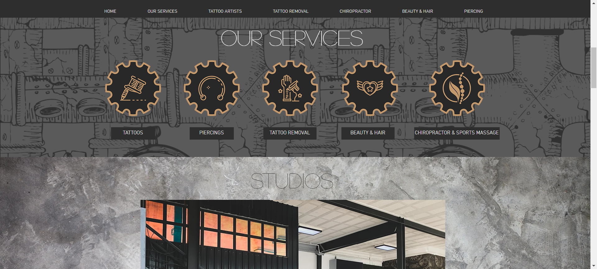
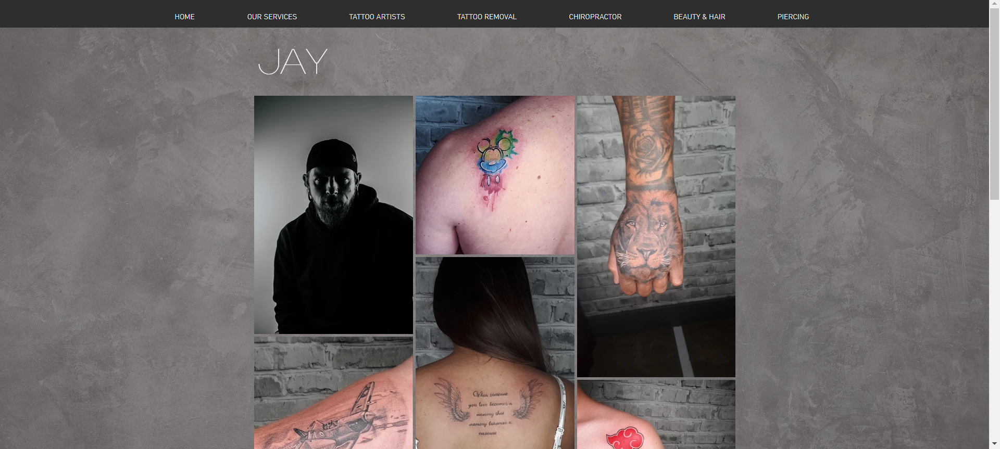
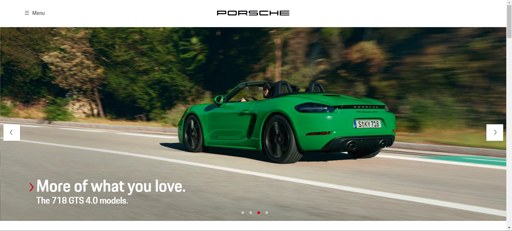
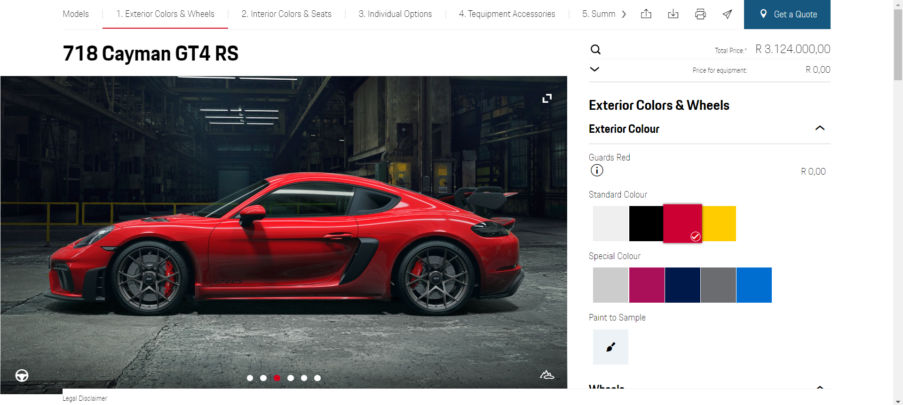
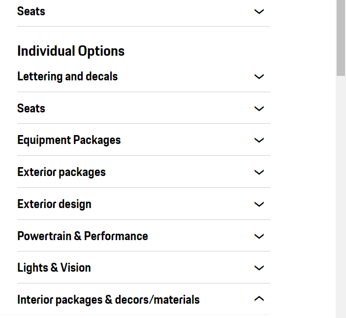
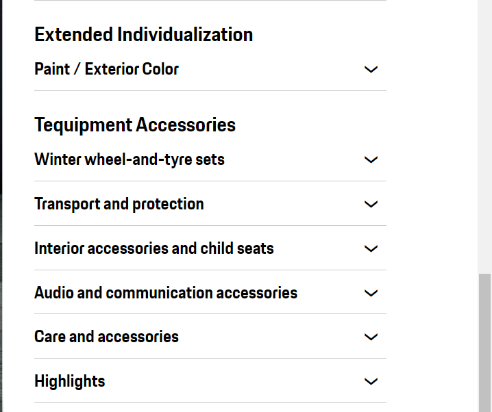

Sally Mustang is a locally based tattoo parlour who also specialize in body piercings, massages and beauty treatments. The Sally Mustang website serves as a representation of their parlour and as a contact point for customers to view their portfolio of works and contact the artists if interested. It is crucial for local artists to have websites that promote their brand as it allows them to gain recognition and spread their works into the public
Pros

HomePage for Sally Mustang WebsiteThe website very much as an artistic and rustic aesthetic. Before a customer views a website, most of the time they already have an idea of what they are going to be greeted with. Deviating too far away from this thought can confuse the customer and make them skeptical of using the service, hence it is important to remain true to that idea, Sally Mustang has done that by creating the website’s interface with that of a tattoo parlour’s characteristic and in this way makes it welcoming to the customer.

Artist Page for Sally Mustang Website
Sally Mustang is open and transparent with their portfolio of work. There is a separate page dedicated to each tattoo artist and their previous works. This allows possible customers to preview the works of various artists and give them the choice of which artist they may prefer. This is important as tattoos are lifetime investments, so choosing an artist whose style you love is crucial
Cons
The Website could use more information about the parlour such as their culture and goals to welcome more customers and allows customers to get to know the brand and as such create an identity within the brand that sets the expectations of the customer.
The parlour would have to make sure that they received the customers permission to be included on the website as their pictures are displayed there. This raises ethical concerns for the privacy of these customers, given that there needs to be transparency involved when posting pictures of other people
The official Porsche website has a sleek and aesthetic design that places control right into the user’s hands. User’s access car websites to simply to look at cars and that’s what the website gives you without beating around the bush. The front page greets the user by displaying the newer models and uses this front section as advertising.

HomePage for Porsche Website
Beneath that is a preview of a catalogue of Porsche cars for sale that can be purchased through a dealership. It provides prices for all the available models. It is interesting to note that this catalogue is placed immediately underneath the advertising. This allows users to quickly navigate to the catalogue and view the prices for each model.
The Porsche website also has amazing interactivity and personalisation. With each model displayed it provides the price as well as the option for the user to build their own. The user can select their specific model and the colour of their choice that updates to show the user what the color would look like. The customisation is not limited to the exterior as the user can customise the interior and that will also update and display their choice

Porsche customisable option
Cons
As mentioned before the website allows users customise their cars to their liking and view how the car would look with these details. The issue with this is that the website has a long loading time when it comes to updating the cars. Whether this is due to slow internet connection or server issues, it provides a less optimal experience for the customer.
Their customisation may also be overloaded with too many options. This is great for customers who have extensive knowledge about cars but for a common customer, all the available customisable options may be sensory overload for them and may lead to them paying more money than they need to and being exploited.

Porsche customisable options

Porsche customisable options continued